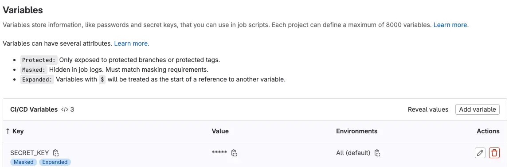

密码到底怎么存放才安全?
Posted on Mon 19 August 2024 in Journal
| Abstract | 密码到底怎么存放才安全? |
|---|---|
| Authors | Walter Fan |
| Category | learning note |
| Status | v1.0 |
| Updated | 2024-08-19 |
| License | CC-BY-NC-ND 4.0 |
发现有小伙伴在源代码以及配置文件中存放明文的帐号密码, 我报了一个 git issue, 结果小伙伴不乐意了, 代码里不让放, 配置文件不让放, 那到底放哪里?
我回答这些地方没说一定不让放, 代码里一般是不要放, 配置文件里当然可以存放密码, 只是不能放明文的未加密的密码, 必须是加密后的密文.
可是加密得有密钥, 那密钥又放哪里呢?
今天我就来介绍一个简单易用的方案:
- 用 Ansible Vault 来加密存放帐号密码的文件, 这样代码仓库中就看不到帐号和密码了
- 用 gitlab ci variable 来存放加密上述文件的密钥, 这样没有权限的人员无法查看
- 用 ansible 模板文件来生成配置文件, 将其中的帐号和密码加密, 这样部署出去的配置文件中就不会有明文的帐号和密码了
Ansible Vault 是 Ansible 中的一个功能，允许用户在管理敏感数据（如密码、密钥或证书）时进行加密和解密操作。它帮助你将敏感信息保存在代码库中时保持安全性，而不会直接暴露这些数据。
Ansible Vault 的常见用法和操作步骤
1. 创建加密文件
要创建一个新的加密文件，可以使用 ansible-vault create 命令。此命令会提示你输入加密密码，然后你可以在编辑器中输入要加密的内容。
ansible-vault create secret.yml
2. 加密现有文件
如果你已经有一个文件并且想要对其加密，可以使用 ansible-vault encrypt 命令。
ansible-vault encrypt existing_file.yml
3. 解密文件
要解密一个已经加密的文件，可以使用 ansible-vault decrypt 命令。
ansible-vault decrypt secret.yml
4. 编辑加密文件
有时你可能需要对加密文件进行编辑。在这种情况下，你可以使用 ansible-vault edit 命令，它会在解密的情况下打开文件，编辑完毕后再自动加密。
ansible-vault edit secret.yml
5. 重加密文件
如果你想更改加密文件的密码，可以使用 ansible-vault rekey 命令。此命令会提示你输入旧密码和新密码。
ansible-vault rekey secret.yml
6. 在 Playbook 中使用加密文件
在 Ansible Playbook 中使用加密文件时，需要在运行 Playbook 时指定 --ask-vault-pass 参数，以便在执行过程中输入解密密码。
ansible-playbook playbook.yml --ask-vault-pass
或者你可以使用 --vault-password-file 参数，指定一个包含密码的文件，以自动提供密码。
ansible-playbook playbook.yml --vault-password-file .vault_pass
7. 同时处理多个加密文件
如果有多个加密文件需要在同一个 Playbook 中使用，可以使用 --vault-id 选项来指定不同的加密标识符，并为每个标识符分配不同的密码或密码文件。
ansible-playbook playbook.yml --vault-id dev@prompt --vault-id prod@.prod_vault_pass
8. 将加密文件作为变量使用
如果加密文件中的数据是一个变量文件，可以直接在 Playbook 中加载它，并将其作为变量使用。
---
- hosts: all
vars_files:
- secret.yml
tasks:
- debug: var=my_secret_var
使用 ansible-vault 时，务必小心管理加密密码，避免泄露。此外，最好通过版本控制系统管理这些加密文件，以便在团队协作中安全地共享敏感信息。
Ansible Vault 使用实例
我们有一个配置文件 .env, 内容如下
DB_USERNAME=walter
DB_PASSWORD=P@ss1234
这样存放明文是极不安全的, 我们期望的存放的这样加密的内容
DB_USERNAME=QUl4RTZxYzZLb2RlbDVGOA==
DB_PASSWORD=MDNXWDBaTVpxem4wOGpRUw==
将密码存放在一个 yaml 文件中, 例如 secrets.yml, 为简单起见, 将加密的密钥也放在这个文件中 实践中一定要分开存放.
AES_KEY: helloworld
AES_IV: 1234567890123456
DB_USER: walter
DB_PWD: P@ss1234
将这个文件加密, 这样原始的密码就看不到了
ansible-vault encrypt secrets.yml
密钥存放在 gitlab 中 的 "CI/CD Settings" 中的变量(Variables) 里 
然后将此变量在 CI job 开始时放入文件, 在 CI job 结束时删除, 例如以下的 .gitlab-ci.yml 在 CI job 中根据模板文件 env.j2 生成 ".env" 配置文件
env.j2 中放的是占位符变量
DB_USERNAME={{ secrets.DB_USER }}
DB_PASSWORD={{ secrets.DB_PWD }}
variables:
VAULT_PWD_FILE: .ansible_vault_password.txt
stages:
- build
- test
- archive
job_build:
stage: build
script:
- echo "check config file"
- echo "$SECRET_KEY" > $VAULT_PWD_FILE
- virtualenv -p python3 venv
- . ./venv/bin/activate
- pip install -r ./requirements.txt
- ansible-playbook -v -i inventory.ini playbook.yml --vault-password-file $VAULT_PWD_FILE
- rm -f $VAULT_PWD_FILE
- playbook.yml 可以这样写
- hosts: webserver
become: true
gather_facts: false
tasks:
- name: Load encrypted variables
include_vars:
file: secrets.yml
name: vault_secrets
- name: install dependencies
shell: pip3 install -r requirements.txt
delegate_to: localhost
become: false
- name: encrypt password
shell: python3 aes_util.py {{ vault_secrets | to_json | b64encode }} {{ serial_number }}
delegate_to: localhost
become: false
register: json_output
- name: Parse the JSON output
set_fact:
secrets: "{{ json_output.stdout | from_json }}"
when: json_output.stdout | from_json is not string
- name: generate .env
template:
src: ./etc/env.j2
dest: "./etc/.env"
owner: walter
group: walter
mode: '0644'
而 aes_util.py 是我写的一个小程序, 用来将密码进行 AES 加密, 代码如下
1) requirements.txt 中的依赖库就两个
pycryptodome==3.20.0
ansible==2.16.6]
2) aes_util.py 用来加密帐号和密码, 这里我用的是 AES CBC 模式, 也可用除了 ECB 的其他模式
from Crypto.Cipher import AES
from Crypto.Random import get_random_bytes
from Crypto.Util.Padding import pad, unpad
import base64
import sys
import json
"""encrypt or decrypt by AES CBC
It uses Padding (PKCS #7), this padding scheme adds a series of bytes, all with the same value,
to make the length of the data a multiple of the block size.
The value of each added byte is the number of bytes that are added.
For example, if the block size is 16 bytes and the data needs 3 more bytes to reach this size,
it will add three bytes, each with the value 3 (0x03 0x03 0x03).
- Unpadding (PKCS #7):
During decryption, the padding is removed by reading the value of the last byte,
which indicates how many bytes were added, and then removing that many bytes.
Raises:
TypeError: invalid key length
TypeError: invalid iv length
Returns:
_type_: instance
"""
class AESCipher:
def __init__(self, key, iv):
key_len = len(key)
iv_len = len(iv)
if key_len != 16 and key_len != 24 and key_len != 32:
raise TypeError("Expect key length as 16, 24 or 32")
if iv_len != 16:
raise TypeError("Expect iv length as 16")
self._key = key.encode('utf-8')
self._iv = iv.encode('utf-8')
def encrypt(self, raw):
#print(f"raw bytes: {raw}")
raw = pad(raw.encode('utf-8'), AES.block_size)
cipher = AES.new(self._key, AES.MODE_CBC, self._iv)
encrypted = cipher.encrypt(raw)
return base64.b64encode(encrypted).decode('utf-8')
def decrypt(self, enc):
enc = base64.b64decode(enc)
cipher = AES.new(self._key, AES.MODE_CBC, self._iv)
#print(f"encrypted bytes: {enc}")
raw = cipher.decrypt(enc)
#print(f"decrypted bytes: {raw}")
decrypted = unpad(raw, AES.block_size)
#print(f"unpad bytes: {decrypted}")
return decrypted.decode('utf-8')
def encrypt_pwd(json_obj, serial_number):
aes_key = json_obj.get("AES_KEY")
aes_iv = f"hb_{serial_number}"[0:16]
for key, value in json_obj.items():
cipher = AESCipher(aes_key, aes_iv)
encrypted_text = cipher.encrypt(str(value))
json_obj[key] = encrypted_text
return json_obj
if __name__ == "__main__":
if len(sys.argv) == 2:
serial_number = sys.argv[1]
content = ""
with open('secrets.txt', 'r') as file:
for line in file:
content += line
json_str = base64.b64decode(content).decode('utf-8')
json_obj = json.loads(json_str)
cipher_dict = encrypt_pwd(json_obj, serial_number)
print(json.dumps(cipher_dict))
elif len(sys.argv) == 3:
json_arg = sys.argv[1]
serial_number = sys.argv[2]
json_str = base64.b64decode(json_arg).decode('utf-8')
#print(f"json_str: {json_str}")
json_obj = json.loads(json_str)
cipher_dict = encrypt_pwd(json_obj, serial_number)
print(json.dumps(cipher_dict))
else:
print("no arguments")
exit(1)
试一试, 这个方案既简单又安全
本作品采用知识共享署名-非商业性使用-禁止演绎 4.0 国际许可协议进行许可。